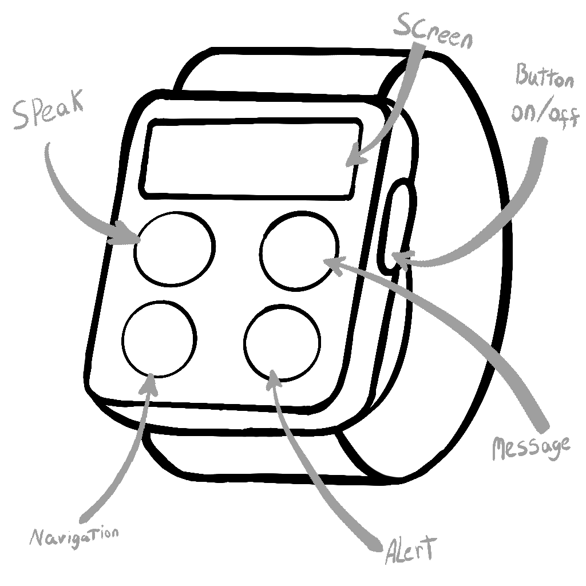
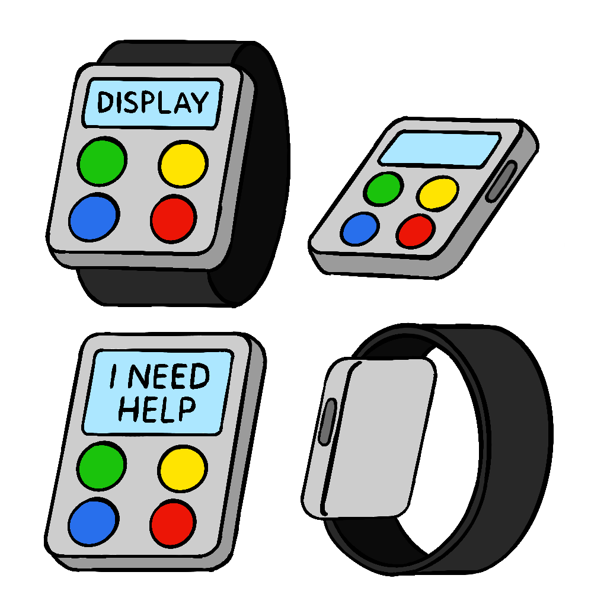
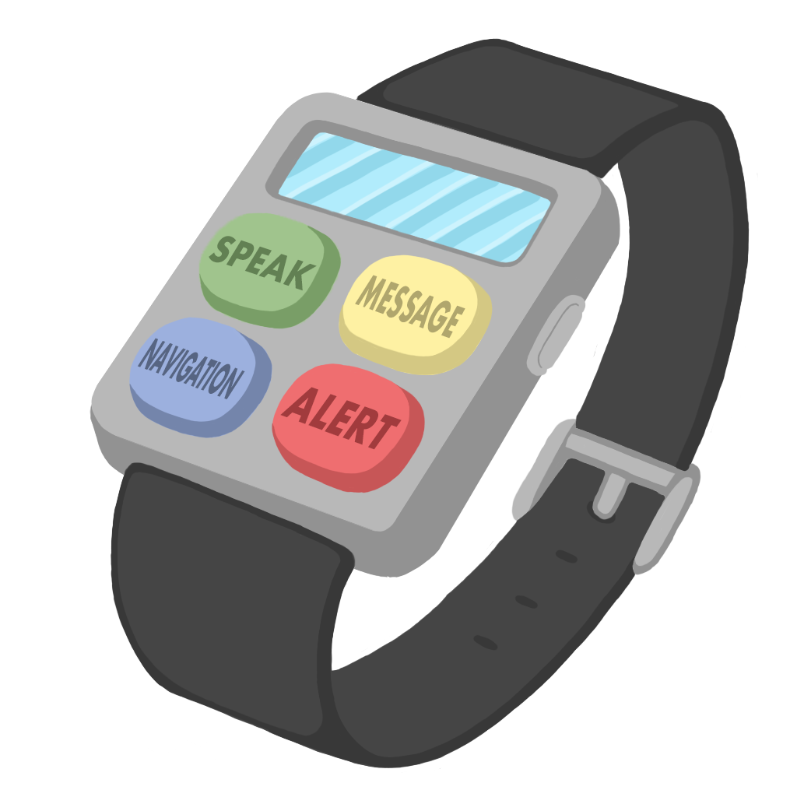
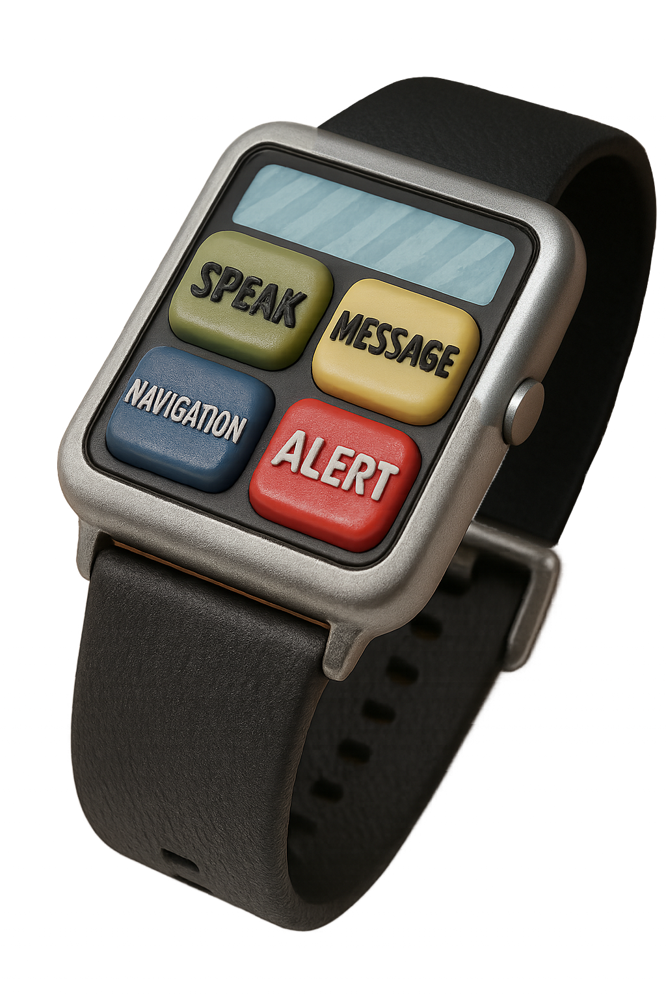
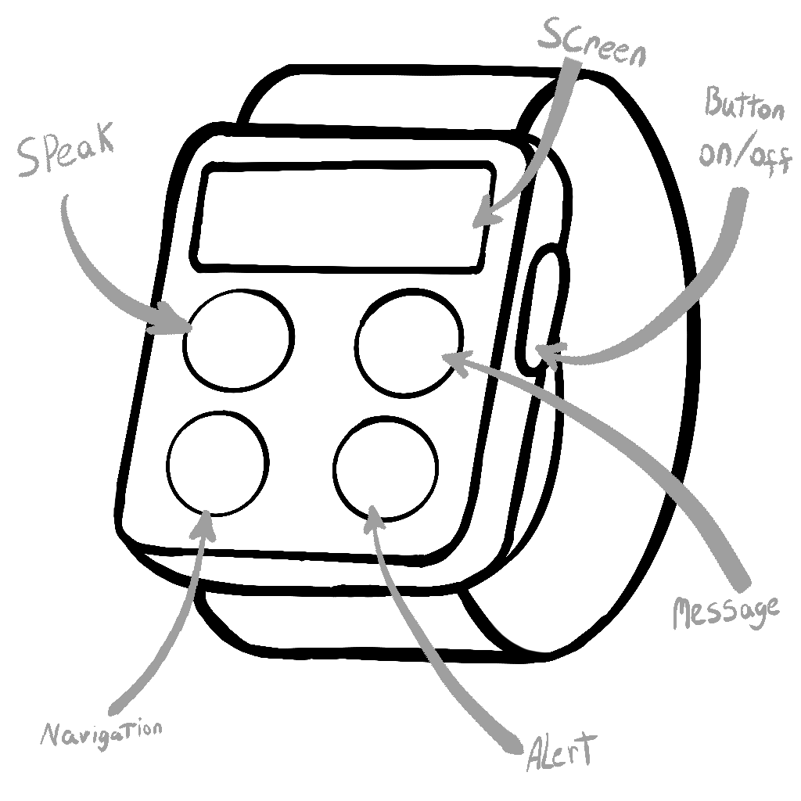
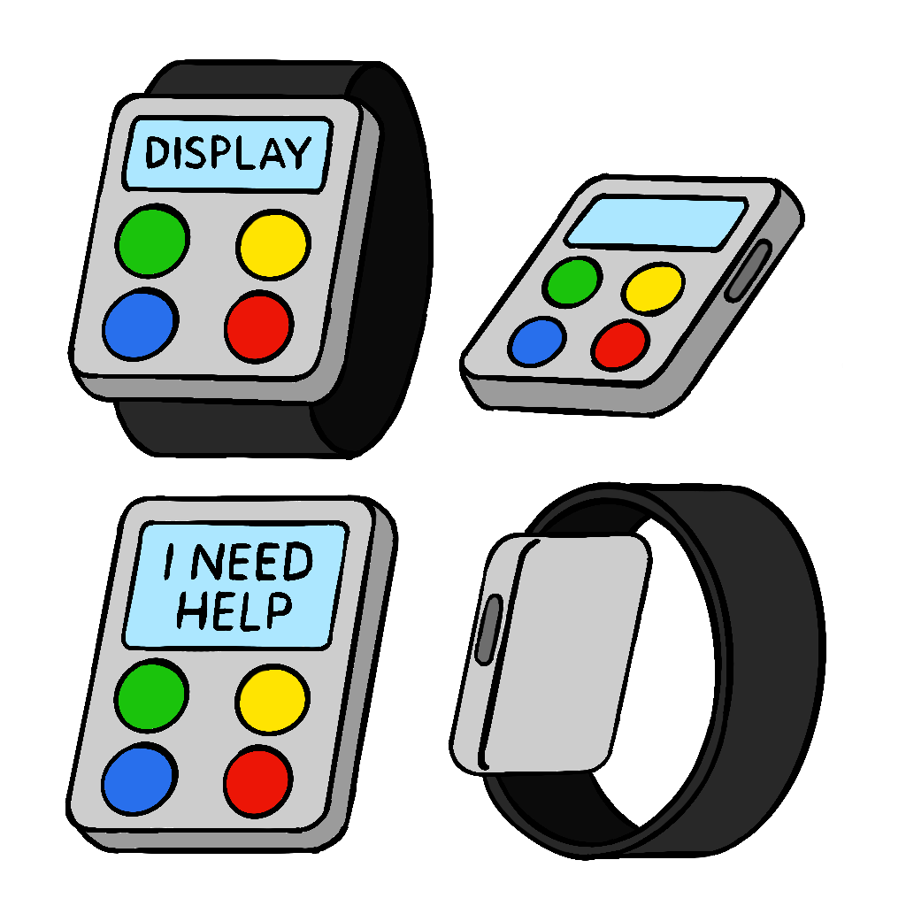
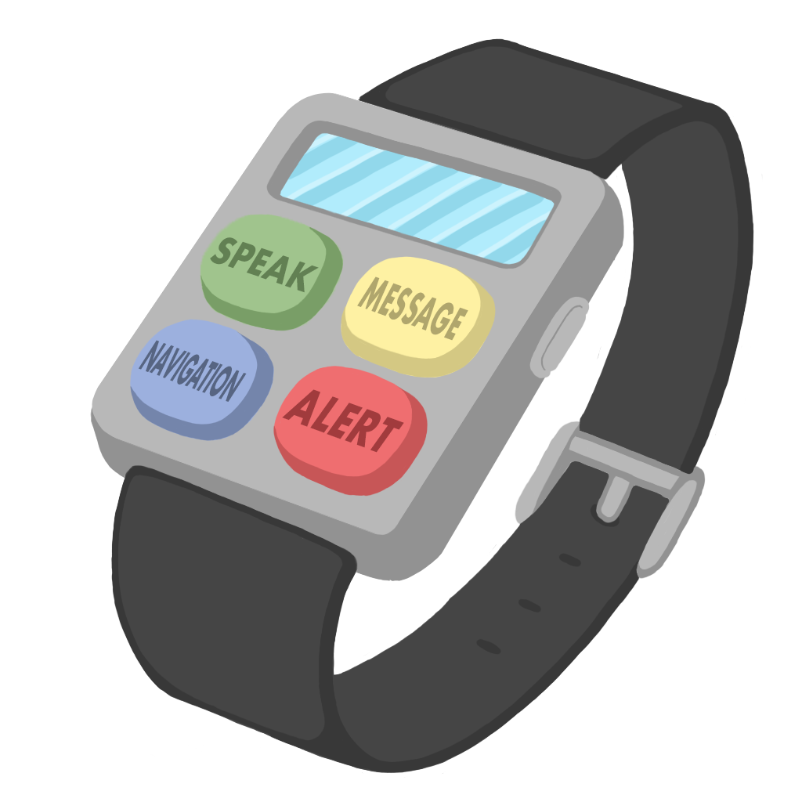
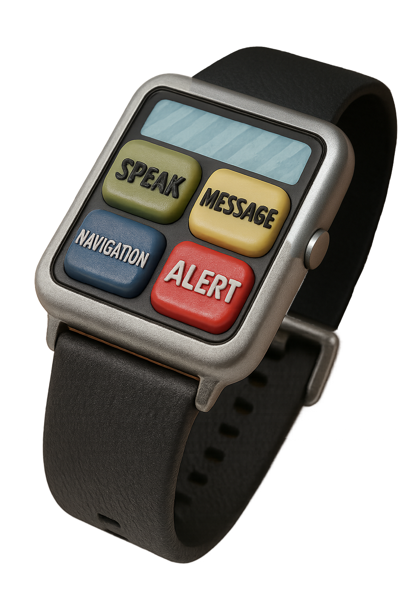

back to main page
year 1 projects
WEARABLE TECH PROJECT
 



AssistLink: A Smartwatch Designed for the Elderly and Disabled
By Rhys cumberland
I came up with the idea for the AssistLink because I wanted to build something that could actually help people with disabilities or elderly individuals in a practical, everyday way. A lot of assistive tech out there either looks overly medical, is too complicated to use, or just doesn’t fit into people’s lives well. I wanted this to feel like a normal smartwatch—something people would feel comfortable wearing—but with features that really matter.
What It Does
A lot of people with disabilities struggle to communicate fast and clearly, especially in stressful situations. That’s why the watch has four large, simple buttons on the face. Each button can be programmed to say something like “I need help” or “I’m okay.” That way, the user can get their point across without needing to speak or explain things every time.
The watch also includes voice-to-text and text-to-speech. So if someone can’t speak, they can type or press a button and the device will speak for them. And if they can’t hear, it’ll transcribe what someone else says on the screen. These are basic tools, but they can make a huge difference in feeling understood.
One feature I really wanted to get right was navigation. For blind users or elderly people who get disoriented easily, the GPS system gives vibration feedback to help guide them. It’s subtle but effective, especially when paired with saved locations like “home” or “doctor.”
Finally, there’s a built-in fall detector and an emergency button. If the user falls or presses SOS, their location is sent to a caregiver or emergency contact right away. This adds peace of mind, especially for people who live alone or are at risk for medical emergencies.
How I Developed It
I started out by doing some basic research—talking to people with different types of disabilities, older adults, and caregivers. I wanted to know what really annoyed them about current devices, and what they wished they had. That feedback guided everything.
Once I had a clearer picture, I made a few quick sketches to explore button placement, shape, and overall size. I knew right away I didn’t want a touchscreen—most people told me those are hard to use if your hands shake or if you don’t have great vision. So I went with physical, color-coded buttons that are easier to press and understand.
Then I mocked up a few designs in Photoshop to test out colors and made a final realistic version thorugh ai technology, spacing, and how the strap might work.
It was super important to me that the device didn’t look too medical or obvious—I wanted it to look more like a regular smartwatch. Something you’d wear out and not feel self-conscious about.
Final Thoughts
My main goal was to make something that worked well, felt comfortable, and didn’t make the user feel awkward about wearing it. I think AssistLink could really help people communicate more easily, move around more safely, and stay connected to the people who support them. It’s a small device, but it’s meant to make a big difference in someone’s day-to-day life.